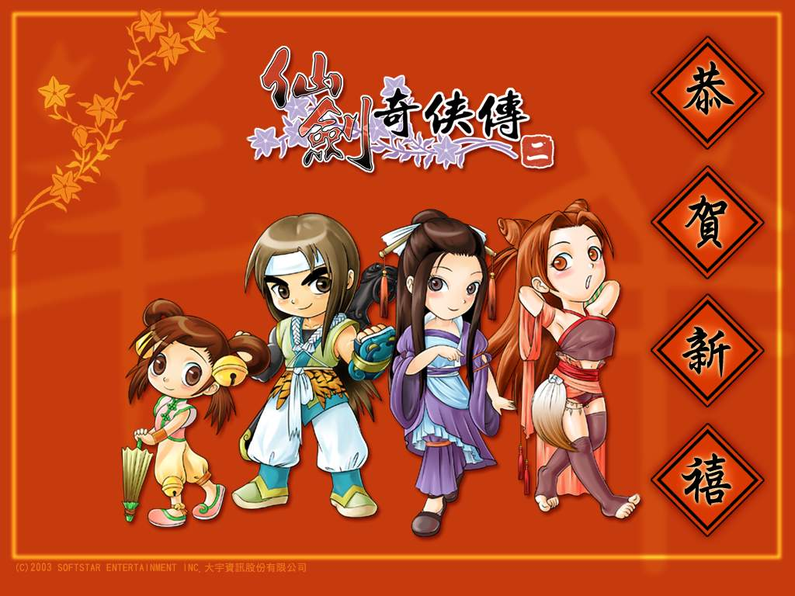

|
|
|
《仙剑奇侠传二》是由中国台湾大宇资讯股份有限公司旗下的狂徒创作群、DOMO小组携手制作的单机游戏，于2003年1月上市。二代故事发生在一代的8年之后，剧情紧接一代，围绕王小虎、苏媚、沈欺霜、李忆如展开，讲述四人交织出一段错综复杂的故事。一代的主角以及全新人物在二代中出现，交待了前后两代发生过以及即将发生的感情恩怨纠葛。本作首次出现了御灵、虎煞、阵术、养蛊、喂毒等多种战斗和养成系统，战斗采用45度视角斜向以及全动态同步回合制的攻防方式。
二代故事是开始于一代结束的八年后，当初与李逍遥住在同一个村子的邻居——王小虎，已经是一位十八岁的成熟青年。想当年年纪虽小，却很有孝心，不怕风浪独自上仙灵岛为父求药的事迹一直让大家们津津乐道，个性坚毅刚强，做事执着且有决心，从小视逍遥为偶像，虽然逍遥后来未收小虎为徒，但小虎心中笃定要成为如李逍遥一样的大侠；名满江湖、除魔卫道，是永远不变的目标。
此时的神州大地，因为八年前锁妖塔崩毁，万千妖魔尽出，天下大乱，幸有一位得道高僧——千叶禅师的出现，广纳门徒成立大慈悲明宗，四处传道布施、救灾救人，与蜀山仙剑派掌门人李逍遥同为正道的两大领袖。另一方面，魔族掌旗使孔璘，也趁机扩展势力，进行一项可怕的阴谋，意图染指人间。
王小虎与三位女主角便是在这样的一个时空背景，交织出一段充满亲情、友情、爱情的传奇故事。到底王小虎是如何踏上旅程、和几位女主角是如何结识且发生动人情事、如何卷入一连串安排好的阴谋中而不自觉、又如何在千叶禅师的帮助下，对抗那可怕的魔头孔璘……
http://www.yxdown.com/SoftView/SoftView_19306.html#dizhi
http://blog.163.com/jsshlyjsszlf_00001/blog/static/85778491201281753530413/